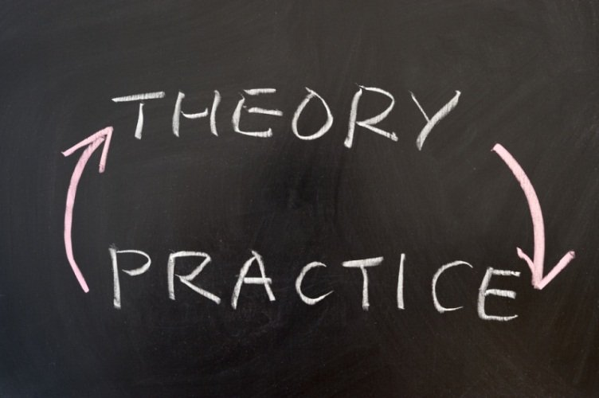

Why C?

Hundreds of programming languages
A program is an abstract state machine.
A behavior of a state machine is a sequence of states.
A state is an assignment of all variables.
A variable is an object in computer memory.
C is a imperative programming language.
(Imperative: 命令式的)
Hundreds of programming languages
In principle, you can do whatever you want using C.

"Keep the language small and simple."
What you see is what you get. (a + b)
"Don't prevent the programmer from doing what needs to be done."
???
"Make it fast, even if it is not guaranteed to be portable."
Beginners are welcome!
20% theory + 80% coding
I can teach you theory; but I cannot write code for you.
Don't expect to learn everything at once.
(pointers: *)
Open Source C/C++ IDE for Windows

Replace verbose comments with clear code.

程序 = 数据 + 操作
Niklaus Wirth ($1934 \sim$)
Turing Award ($1984$) for developing a sequence of innovative computer languages
$a \in $ int $b \in $ int
$a + b \in $ int
$a - b \in $ int
$a \times b \in $ int
$a \;/\; b \in $ int
$a \;\%\; b \in $ int (取余)
The type of a variable determines
doubleDBL_MIN DBL_MAX
printf("DBL_MIN = %f \t DBL_MAX = %f\n", DBL_MIN, DBL_MAX);
void (address)